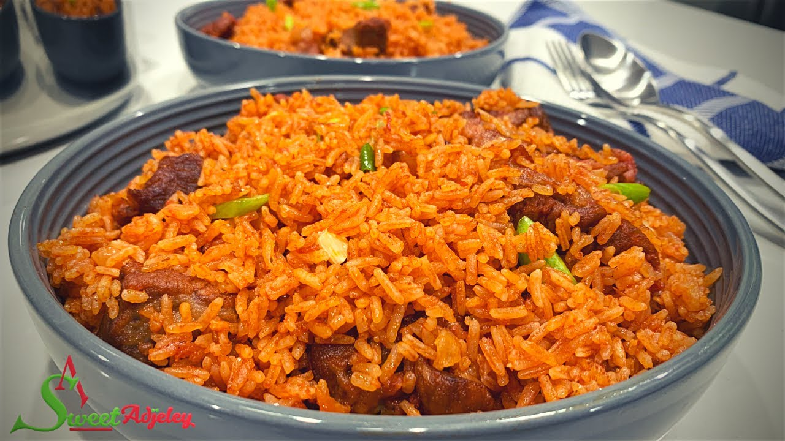

Jollof Rice

Ghana Style
This recipe for Ghanaian jollof rice brings you a brightly colored red/orange rice dish,
with a wonderful spice and rich, spicy, and saucy meat.
Ingredients
For the meat
- 750 to 800g (1 1/3 lbs) lamb (or beef)
or any other meat
- ½ an onion
- 2-3 whole cloves
- 1 maggi cube
For the rice
- 2 cups long-grain rice
- 1/4 cup vegetable oil
- 1 can(14 oz) tomato paste or puree
- 3-5 fresh tomatoes chopped
- 1 large onion, finely chopped
- 2-3 cloves of garlic, minced
- 1 red bell pepper, diced
- 1 green bell pepper, diced
- 1-2 Scotch bonnet peppers (adjust to your preferred spice level)
- 1 teaspoon thyme
- 1 teaspoon curry powder
- 1 teaspoon ginger powder
- 2-3 Maggi cubes (or other bouillon cubes)
- Salt and black pepper to taste
- 2-3 cups water
- optional: cooked meat (such as chicken, beef, or goat)
Insructions
For the meat
- Cut the lamb (or beef) into sizeable chunks.
- Create a paste by blending the ½ portion of onion, garlic and lamb seasoning in a blender or with a mortar and pestle.
Then, rub the paste on your meat pieces.
- If the meat is tough, simmer the meat and sauce paste until the meat is tender,
then remove the pieces of meat and grill or fry them so the lamb pieces crisp up
- If the meat is tender, it can go straight to the grill for cooking through.
Set the cooked meat aside.
For the rice
- Heat the vegetable oil in a large pot or Dutch oven over medium heat
- Add the chopped onion and minced garlic. Sauté until the onion is translucent.
- Stir in the tomato paste or puree, curry powder, dried thyme, ginger powder, and Maggi cubes.
Cook for about 5 minutes, stirring occasionally.
- Add the diced bell peppers and Scotch bonnet peppers.
Continue to cook for another 5 minutes.
- Rinse the rice thoroughly under cold water and add it to the pot.
Mix well with the tomato stew.
- Pour in enough water to cover the rice (about 2-3 cups).
Season with salt and black pepper.
- Bring the mixture to a boil, then reduce the heat to low.
Cover the pot with foil and a lid to create a tight seal.
- Let the rice simmer for about 20-25 minutes or until fully cooked.
Check occasionally and stir gently to prevent sticking.
- If using cooked meat, add it to the rice during the last 10 minutes of cooking.
- Once the rice is tender and fully cooked, fluff it with a fork and serve hot.